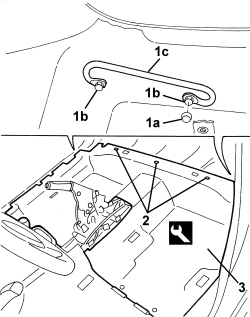
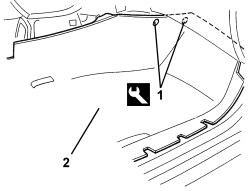
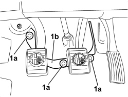
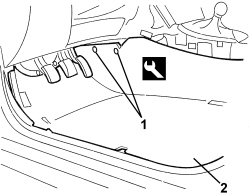

7040L10 PASSENGER COMPARTMENT FLOOR COVERING - R.R.
- Path
- Procedures > 70 FITTINGS > 7040 BODY INTERIOR FITTINGS AND TRIM > 7040L PASSENGER COMPARTMENT FLOOR COVERING > 7040L10 PASSENGER COMPARTMENT FLOOR COVERING - R.R.
- Kind
- repair procedure (removal / refitting; the operation number is the code)
- Applies to
- all engines; all production periods
- Interactive page
- https://sloeber94.github.io/elrnDB-aBrrSpdr/en/#/946002642
Applies to: all engines; all production periods
 Removing
Removing
 Refitting
Refitting- Work on both sides.
Op. 7045A10 FRONT SEAT (ONE), LEFT OR RIGHT - R.R.
Op. 7040A65 CONSOLE SIDE CLOSING (ONE) - R.R.
Op. 7040L40 FRONT DOOR RUNNING BOARD (ONE), LEFT OR RIGHT - R.R.
Op. 7040A04 DASHBOARD LOWER TRIM - R.R.
Op. 7040L50 DRIVER'S FOOTREST - R.R.
Op. 7050A22 REAR SEAT CUSHION - R+R
Op. 7065B14 ANCHORAGE ROD FOR (ONE) REAR SEAT BELT LEFT OR RIGHT - R.R.
Op. 7040L22 REAR COVER ON TUNNEL - R.R.
Op. 7040L37 GEAR LEVER TRIM - R.R
Op. 3380A44 HANDBRAKE/LINKAGE PROTECTION - R+R
Op. 7040L20 TUNNEL COVER - R.R
Op. 7040H38 CENTRE PILLAR UPPER ELEMENT (ONE), LEFT OR RIGHT - R.R
Op. 7040G30 BOOT LIGHT BULB HOLDER - R.R.
Op. 7040H42 REAR PILLAR TRIM (ONE), LEFT OR RIGHT- R.R
Op. 7050A15 SPLIT REAR SEAT RIGHT BACKREST - R.R.
Op. 7050A13 SPLIT REAR SEAT LEFT BACKREST - R.R.
Op. 7040H50 REAR PANEL (ONE), LEFT OR RIGHT - R.R
1. Working on both sides of the vehicle, remove cover (1a), then unscrew bolts (1b).
Remove front seat belt retaining brackets (1c).
2. Release the rear retaining studs using the special tool.
Tool | Description | Function | Validity |
|---|---|---|---|
1823015000 | Knife | Retainer removal |
3. Slightly raise and detach the rear carpet area.

Applies to: all engines; all production periods
1. Undo the front passenger side area retaining studs using the special tool.
Tool | Description | Function | Validity |
|---|---|---|---|
1823015000 | Knife | Retainer removal |
2. Slightly raise and detach the front passenger side carpet.

Applies to: all engines; all production periods
1. Working in the area of the pedal assembly, release the retainers (1a) and move the frame (1b) slightly to release it from the carpet on the floor.

Applies to: all engines; all production periods
1. Working in the pedal area, undo the retaining studs using the special tool.
Tool | Description | Function | Validity |
|---|---|---|---|
1823015000 | Knife | Retainer removal |
2. Remove the passenger compartment floor carpet.

Applies to: all engines; all production periods
Refitting
Removing- Check that the passenger compartment floor carpet is not damaged.
- Position the passenger compartment floor carpet.
- Attach the carpet retaining buttons.
- In the area of the pedal assembly, place the frame in position above the carpet and attach the retainers.
- Working from both sides of the vehicle, position the front seat belt retaining brackets, then tighten the front bolts (the rear bolts will be tightened at a later stage after refitting the side panels).
Op. 7040H50 REAR PANEL (ONE), LEFT OR RIGHT - R.R
Op. 7050A13 SPLIT REAR SEAT LEFT BACKREST - R.R.
Op. 7050A15 SPLIT REAR SEAT RIGHT BACKREST - R.R.
Op. 7040H42 REAR PILLAR TRIM (ONE), LEFT OR RIGHT- R.R
Op. 7040G30 BOOT LIGHT BULB HOLDER - R.R.
Op. 7040H38 CENTRE PILLAR UPPER ELEMENT (ONE), LEFT OR RIGHT - R.R
Op. 7040L20 TUNNEL COVER - R.R
Op. 3380A44 HANDBRAKE/LINKAGE PROTECTION - R+R
Op. 7040L37 GEAR LEVER TRIM - R.R
Op. 7040L22 REAR COVER ON TUNNEL - R.R.
Op. 7065B14 ANCHORAGE ROD FOR (ONE) REAR SEAT BELT LEFT OR RIGHT - R.R.
Op. 7050A22 REAR SEAT CUSHION - R+R
Op. 7040L50 DRIVER'S FOOTREST - R.R.
Op. 7040A04 DASHBOARD LOWER TRIM - R.R.
Op. 7040L40 FRONT DOOR RUNNING BOARD (ONE), LEFT OR RIGHT - R.R.
Topics linked from this page (17)
- 3380A44 HANDBRAKE/LINKAGE PROTECTION - R+R
- 7040A04 DASHBOARD LOWER TRIM - R.R.
- 7040A65 CONSOLE SIDE CLOSING (ONE) - R.R.
- 7040G30 BOOT LIGHT BULB HOLDER - R.R.
- 7040H38 CENTRE PILLAR UPPER ELEMENT (ONE), LEFT OR RIGHT - R.R
- 7040H42 REAR PILLAR TRIM (ONE), LEFT OR RIGHT- R.R
- 7040H50 REAR PANEL (ONE), LEFT OR RIGHT - R.R
- 7040L20 TUNNEL COVER - R.R
- 7040L22 REAR COVER ON TUNNEL - R.R.
- 7040L37 GEAR LEVER TRIM - R.R
- 7040L40 FRONT DOOR RUNNING BOARD (ONE), LEFT OR RIGHT - R.R.
- 7040L50 DRIVER'S FOOTREST - R.R.
- 7045A10 FRONT SEAT (ONE), LEFT OR RIGHT - R.R.
- 7050A13 SPLIT REAR SEAT LEFT BACKREST - R.R.
- 7050A15 SPLIT REAR SEAT RIGHT BACKREST - R.R.
- 7050A22 REAR SEAT CUSHION - R+R
- 7065B14 ANCHORAGE ROD FOR (ONE) REAR SEAT BELT LEFT OR RIGHT - R.R.